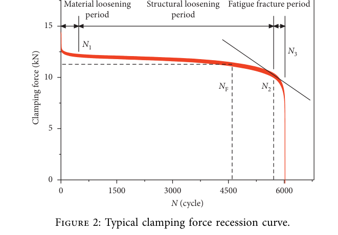
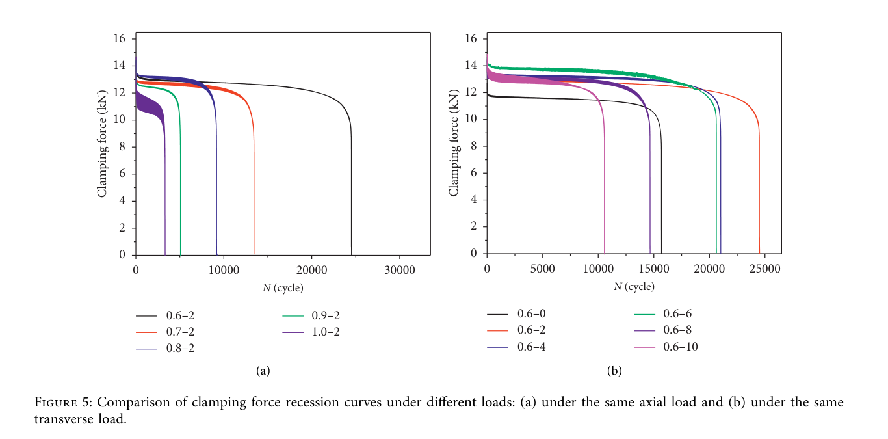

Yang 2021 — estudo de caso— case study
combinado transversal + axial (supressao composta)combined transverse + axial (composite suppression)
Figura do artigoPaper figure


Figura(s) originais do artigo (recorte do PDF) — a fonte dos pontos que foram digitalizados.Original figure(s) from the paper (PDF crop) — the source of the digitized points.
Condições do ensaioTest conditions
| ReferênciaReference | Yang et al. (2021). Shock and Vibration 1441122 · doi:10.1155/2021/1441122 |
| ParafusoBolt | M8x1.25 |
| Pré-carga F0Preload F0 | 14 kN |
| AmplitudeAmplitude | ±0.50–1.00 mm |
| FrequênciaFrequency | 10 Hz |
| Família / nº de curvasFamily / curves | transverse · 8 |
| MAE medianomedian | 0.030 |
Informações do artigo — aparato, corpo-de-prova, matriz de ensaiosPaper information — apparatus, specimen, test matrix
Yang 2021 (Shock & Vibration) — M8 composite (tension+shear) excitation
Citation: Yang, Yang, Xiao, Jiang, Ma, "Competitive Failure of Loosening and Fatigue of Bolts under Composite Excitation", *Shock and Vibration* 2021:1441122. DOI: 10.1155/2021/1441122 (open access, CC BY) PDF: pdfs_open_access/yang2021_sv_combined.pdf (= BAS_V2_papers/A.../Competitive Failure of Loosening and Fatigue of Bolts underComposite Excitation.pdf)
Apparatus
- Competitive loosening-vs-fatigue test bench applying **tensile (axial) load + transverse
(shear) displacement simultaneously, both sinusoidal at 10 Hz with a 90° phase difference**; wedge-shaped fixture converts machine motion to shear.
- Clamp force recorded continuously (ring/washer sensor); tests run to bolt failure
(loosening back-off or fatigue fracture).
- Failure criterion framework: ξ = transverse amplitude / axial load amplitude (mm/kN);
critical ξ = 0.075 mm/kN separates loosening-dominant (ξ > 0.075) from fatigue-dominant (ξ < 0.075) failure.
Specimen
- M8 × 1.25 × 70, grade 8.8 high-strength bolts; proper tightening force
F0 = 14.1 kN (all tests).
Trial matrix (Table 1 combos digitized)
| CSV | Transverse amp (mm) | Axial amp (kN) | ξ (mm/kN) | Failure mode | Life (cycles) |
|---|---|---|---|---|---|
| yang2021_amp1p0mm_ax2kN.csv | 1.0 | 2.0 | 0.50 | loosening | ~3,300 |
| yang2021_amp0p8mm_ax6kN.csv | 0.8 | 6.0 | 0.13 | loosening→fracture | ~5,700 |
| yang2021_amp0p6mm_ax8kN_r1.csv | 0.6 | 8.0 | 0.075 (critical) | simultaneous | ~12,500 |
| yang2021_amp0p7mm_ax11p2kN.csv | 0.7 | 11.2 | 0.0625 | fatigue | ~15,000 |
| yang2021_amp0p5mm_ax8kN.csv | 0.5 | 8.0 | 0.0625 | fatigue | ~27,800 |
| yang2021_fig2_typical.csv | (typical recession curve, Fig 2) | 3-stage | ~6,000 |
Not digitized (repeats/redundant): 0.8 mm–4 kN; 0.6 mm–9.6 kN (crops exist in the paper, Figs 6a2/6c2). 0.6 mm–8 kN reps 2–3 DIGITALIZADAS em 2026-07-31 (yang2021_amp0p6mm_ax8kN_{r2,r3}.csv, Figs 6b2/6b3; prereg 2026-07-31-yang2021-replicas-0p6-prereg.md, round-trip 1,2% vs Tabela 3 — vidas 12500/14699/16251, media 14483 vs 14666). As 3 formam a 1a familia de replicas de bancada real da fonte: piso na janela da metrica (trim 11800, colapso crack-driven excluido) MAE 0.028 / mx 0.054 / sigma 0.0071; scatter de curva completa (colapso incluso) 0.042 / 0.472 / 0.079.
Digitized curves — format note
All normalized by nominal F0 = 14.1 kN; first points can exceed 1.0 (tightening ~~overshoot up to ~15.5 kN in the axial-heavy tests~~). Last point (ratio 0) = fracture. ⚠️ CORRECTED 2026-08-06 (vector probe, campanha FAXINA/D-U): the "~15.5 kN tightening overshoot" reading was WRONG — that value is the upper edge of the oscillation BAND (the transmitted axial load, 11.2 kN at Φ≈0.15, constant width ±1.7 kN), not a tightening transient. The published traces start at N≈100–750 (there is no x=0 point) and the original CSVs anchored their invented x=0 at the band TOP (two of them 0.20–0.36 kN ABOVE the drawn maximum), deflating every curve by −2% to −9.4% through the first-point normalization. Fixed in decision D-U (prereg 2026-08-06-yang2021-ancora; CSVs re-anchored to band CENTERS from the vector extraction, preserved in ../vector_extractions/yang2021_fig2_fig6_vector.json). Two more findings from the same probe: (i) Fig. 6 panels (a2) "0.8–4" and (a3) "0.8–6" are twins: band centers identical to 0.036 kN and lives equal to 0.2 cycle — impossible as independent tests (real replicas here scatter ±13% in life) — yet band widths differ 2.4×. One label is wrong at the source. Does NOT affect the store (0.8–4 was never digitized; F_ax is inert — Δ=0.0000 measured with the paper's per-curve F_ax vs the default). (ii) Fig. 2 is an INDEPENDENT measurement from Fig. 6(a3) (ends 5980 vs 5655, +0.17 kN offset, band-head widths ±0.91 vs ±0.62): not a census duplicate. Its condition remains unlabeled in the paper (0.8 mm is a plausible assumption by the life family).
Digitization caveats
- Curves are oscillation envelopes (band width grows with axial load amplitude — up to
±1.5 kN at 11.2 kN axial); CSVs track band centers. Error ±0.15 kN (±0.01 F/F0).
- Stage boundaries per paper: N1 (material loosening end), N_F (loosening threshold
11.3 kN = 80% F0), N2 (structural loosening end / fatigue knee).
- In fatigue-dominant cases (ξ < 0.075) the final drop is CRACK-driven, not loosening —
exclude the last ~500 cycles when fitting loosening mechanisms.
V2 calibration mapping
- Opens the F_amp ↔ delta_amp coupling (project priority #4): each curve has BOTH a
transverse displacement amplitude (delta_amp) and an axial force amplitude (F_amp) — fit with step_cycle(F_amp=..., delta_amp=...).
- ξ sweep at fixed F0: how loosening rate trades against axial load share →
Phi_tr_correction anisotropy + slip_onset_W.
- 3-stage shape (material → structural → fracture) →
k_emb_scale,k_wear_scale_tr,
surface_damage.
- Caution: fatigue fracture is NOT a V2 mechanism — treat post-N2 data as out-of-model.
Modelo vs dadoModel vs data
Cada card = uma curva digitalizada deste estudo: a linha é a previsão do modelo (config adotada, do store canônico) e os pontos são o dado medido; o badge traz o MAE.Each card = one digitized curve from this study: the line is the model prediction (adopted config, from the canonical store) and the dots are the measured data; the badge shows the MAE.
ReprodutibilidadeReproducibility
Cada card tem ↓ CSV (modelo + dado da curva). Os CSVs digitalizados originais ficam em Models/CALIBRATION_AND_VALIDATION/curve_library/digitized_csv/; a curva do modelo vem do store canônico (config adotada por fonte). Para reproduzir localmente:Each card has ↓ CSV (curve model + data). The original digitized CSVs live in Models/CALIBRATION_AND_VALIDATION/curve_library/digitized_csv/; the model curve comes from the canonical store (adopted per-source config). To reproduce locally:
Ver também o guia de uso do programa e a metodologia.See also the program usage guide and the methodology.